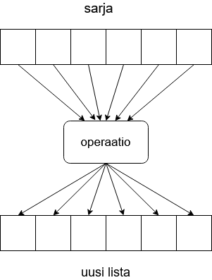

One of the situations where programming is at its most powerful is processing sequences of items and events. Computers are good at repeating things. For example, in the previous parts of this material we have been iterating over strings, lists and dictionaries in various ways.
Let’s assume we have a list of integers, and we would need the same list of items in string format. A traditional way of completing the task could look like this:
numbers = [1, 2, 3, 6, 5, 4, 7]
strings = []
for number in numbers:
strings.append(str(number))
There is also a more “pythonic” way of generating lists from existing lists. These are called list comprehensions.
The idea is to fit on a single line both the description of what should be done to each item on the list, and the assignment of the result to a new list.
In the above example, the operation performed on each item on the list was very simple: each integer was converted into a string. Let’s see what this would look like implemented with a list comprehension:
numbers = [1, 2, 3, 6, 5, 4, 7]
strings = [str(number) for number in numbers]
The second line above contains many of the same elements as the more traditional iterative apporach, but the syntax is different. One way of generalising a list comprehension statement would be
[<expression> for <item> in <series>]
The square brackets around the list comprehension statement signal to Python that the result should be a new list. One by one, each item in the original list is processed, and the result is stored in the new list, just like in the iterative approach above. As a result we have a new list with exactly as many items as were in the original, and all items have been processed in an identical fashion.
(NB: the originals for the images in this part are temporarily missing, which is why there is some Finnish vocabulary in the illustrations in this part. We are working on fixing this.)

List comprehensions can handle much more complicated operations as well. We can perform calculations, such as multiplying the original items by ten:
numbers = list(range(1,10))
print(numbers)
numbers_multiplied = [number * 10 for number in numbers]
print(numbers_multiplied)
In fact, the expression within the list comprehension statement can be any Python expression. You can even call functions you’ve defined yourself:
def factorial(n: int):
""" The function calculates the factorial n! for integers above zero """
k = 1
while n >= 2:
k *= n
n -= 1
return k
if __name__ == "__main__":
numbers = [5, 2, 4, 3, 0]
factorials = [factorial(number) for number in numbers]
print(factorials)
With the more familiar for loop the same process could be expressed like this:
def factorial(n: int):
""" The function calculates the factorial n! for integers above zero """
k = 1
while n >= 2:
k *= n
n -= 1
return k
if __name__ == "__main__":
numbers = [5, 2, 4, 3, 0]
factorials = []
for number in numbers:
factorials.append(factorial(number))
print(factorials)
List comprehensions allow us to express the same functionality more consisely, usually without losing any of the readability.
We can also return a list comprehension statement from a function directly. If we needed a function for producing factorials for lists of numbers, we could achieve it very concisely:
def factorials(numbers: list):
return [factorial(number) for number in numbers]
* ** *** **** **** *** ** * **********
In the examples above all of our lists remained the same length before and after a list comprehension operation. In each case, all the items in the original list were used as the basis of the new list. But sometimes we only need some of the original items. How can this be achieved?
A list comprehension statement also allows for a condition, so that we can check the items against the condition and select only those which match. The general syntax is as follows:
[<expression> for <item> in <series> if <Boolean expression>]
The statement above is otherwise identical to the general form introduced in the beginning of this section, but now there is an if statement at the end. Only those items from the original list for which the Boolean expression is true are used as the basis of the new list.
In the example below we select all the even items from the original list as the basis of the new list. In fact, these items are not further processed in any way; they are assigned to the new list as is:
numbers = [1, 1, 2, 3, 4, 6, 4, 5, 7, 10, 12, 3]
even_items = [item for item in numbers if item % 2 == 0]
print(even_items)
The expression in the list comprehension statement above is just a simple item, which means that no operations are to be performed on the items in the list. The expression could be any Python expression, just like in the previous examples. For example, the following list comprehension statement takes all the even items in a list, multiplies each by ten, and stores the result in a new list:
numbers = [1, 1, 2, 3, 4, 6, 4, 5, 7, 10, 12, 3]
even_items = [item * 10 for item in numbers if item % 2 == 0]
print(even_items)
As you come across more and more complicated list comprehensions, you may find it useful to try reading the condition first. After all, the items are processed only if they pass the test, so it often makes sense to first figure out which items pass the filtering stage. Sometimes the expression in a list comprehension statement would not even be possible for all the items in the original list.
For example, the factorial operation is only defined for non-negative integers. If we can’t be sure a list only contains values of zero or above, the contents have to be filtered before passing them on to the factorial function we made before:
def factorial(n: int):
""" The function calculates the factorial n! for integers above zero """
k = 1
while n >= 2:
k *= n
n -= 1
return k
if __name__ == "__main__":
numbers = [-2, 3, -1, 4, -10, 5, 1]
factorials = [factorial(number) for number in numbers if number >= 0]
print(factorials)
As we saw in our very first list comprehension example, where integers were converted into strings, the items in the new list do not have to be of the same type as the items in the original list. Continuing from the factorial example above, we can create a tuple from each original item and its processed counterpart, and store these in a list, combining everything we’ve learned so far in a single list comprehension statement:
def factorial(n: int):
""" The function calculates the factorial n! for integers above zero """
k = 1
while n >= 2:
k *= n
n -= 1
return k
if __name__ == "__main__":
numbers = [-2, 3, 2, 1, 4, -10, 5, 1, 6]
# the variable name abbreviated here so that this would be easier to read
factorials = [(n, factorial(n)) for n in numbers if n > 0 and n % 2 == 0]
print(factorials)
Picking the above example apart, we have the Boolean expression n > 0 and n % 2 == 0. This means that only items which are both positive and divisible by two are accepted for further processing from the original list.
These positive, even numbers are then each in turn processed into the format (n, factorial(n)). This is a tuple, where the first item is the number itself, and the second item is the result returned by the factorial function.
Often when we have a conditional statement, we also include an else branch. As we can use conditions in list comprehensions, the else branch is also available with list comprehensions. The general syntax of the conditional used with list comprehensions looks like this:
<expression 1> if <condition> else <expression 2>
We came across these single line conditionals, or ternary operators, already in part 7. The expression above evaluates to either expression 1 or expression 2, depending on whether the condition is true or false.
As a refresher on the subject, if we needed to print out the larger of two numbers, and we wanted to use just a single print statement, we could fit it all on a single line:
number1 = int(input("Type in number 1:"))
number2 = int(input("Type in number 2:"))
print (number1 if number1 > number2 else number2)
Combining the ternary operator syntax with a list comprehension statement yields the following general structure:
[<expression 1> if <condition> else <expression 2> for <item> in <series>]
This may look a little confusing, as the conditional structure now comes before the actual list comprehension part. This is just the way the syntax has been defined, at least at the moment. If there is also an else branch, the conditional comes first. If there is just an if, it goes to the end. You can try swapping them around and see what happens.
Including an else operator means that we will again process every item from the original list. Depending on whether the condition is true or false, either expression 1 or expression 2 is performed on each item on the list.
The following example checks if the items on a list are zero or above. Any such item is accepted as is, but all negative items are negated, so that the sign is changed from negative to positive. The result is a list containing the absolute values of the items in the original list.
numbers = [1, -3, 45, -110, 2, 9, -11]
abs_vals = [number if number >= 0 else -number for number in numbers]
print(abs_vals)
Reiterating what happens above: if the condition number >= 0 is true, the item undergoes expression number, and the result is the item itself. If the condition is false, the item undergoes expression -number, so that it becomes positive in value.
In the following example we have the function string_lengths which takes a list as its argument, and returns another list with the lengths of any strings in the original list. This function is okay with list items of any type, however. If the item is a string, it calculates its length. If the item is anything else, it inserts -1 in the list it returns.
def string_lengths(my_list: list):
""" The function returns the lengths of strings in a new list """
return [len(item) if type(item) == str else -1 for item in my_list]
if __name__ == "__main__":
test_list = ["hi", 3, True, "there", -123.344, "toodlepip", 2, False]
lengths = string_lengths(test_list)
print(lengths)